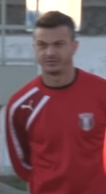
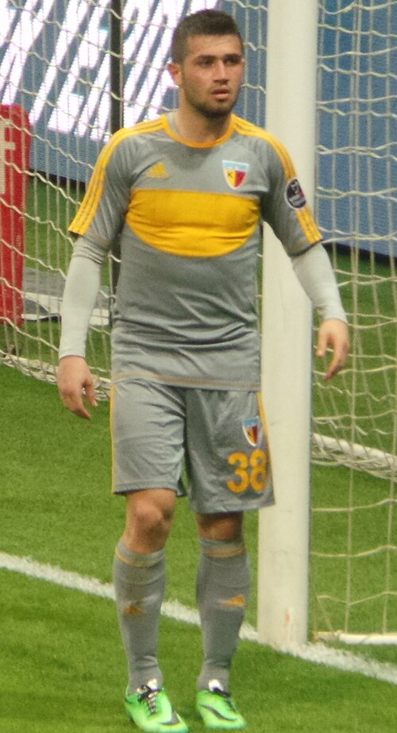

Kayserispor Portfolio
Current roster, squad value, top assets, U23 assets, honours, and market risk.
Squad Market Score76.3
Squad ARES Score77.0
Average Age26.4
Transfer RiskLow

Kayserispor
Super Lig | Turkey | Europe
Top AssetStefano Denswil
U23 Assets5
Honours Rows11
ConfidenceHigh
Roster source: Kayserispor | Checked 2026-05-24
Market Score vs Age
Squad portfolio shape by age and market score.
X-axis: Player ageY-axis: Market Score
ARESMarketTrendConfidence
How to read: Each point shows how squad age relates to market value.
Position Strength
GK, CB, FB, CM, W, CF portfolio balance.
X-axis: Position groupY-axis: Squad strength
ARESMarketTrendConfidence
How to read: Bars compare strength across the main football position groups.
Current Player Roster
| Player | Age | Position | Minutes / Role | ARES | Market | Tier | Trend | Confidence |
|---|---|---|---|---|---|---|---|---|
| SDDFKayserisporStefano Denswil | 21 | DF | 1582 estimated minutes / current squad | 85.6 | 90.8 | Rising Asset | Rising | Medium |
| GOFWKayserisporGerman Onugkha | 25 | FW | 2977 estimated minutes / current squad | 72.1 | 89.6 | Core Starter | Rising | Medium |
| JKDFKayserisporJadel Katongo | 21 | DF | 2909 estimated minutes / current squad | 75.8 | 89.5 | Rising Asset | Rising | Medium |
| JMMFKayserisporJoão Mendes | 25 | MF | 2905 estimated minutes / current squad | 66.6 | 85.3 | Core Starter | Rising | Medium |
| BKDFKayserisporBurak Kapacak | 31 | DF | 782 estimated minutes / current squad | 66.9 | 83.9 | Core Starter | Rising | Medium |
| SGDFKayserisporSemih Güler | 20 | DF | 1070 estimated minutes / current squad | 76.0 | 81.0 | Rising Asset | Stable | Medium |
| YABMFKayserisporYoussef Ait Bennasser | 31 | MF | 1367 estimated minutes / current squad | 68.0 | 76.4 | Core Starter | Stable | Medium |
| UBMFKayserisporUnion Berlin | 25 | MF | 2067 estimated minutes / current squad | 88.0 | 74.9 | Core Starter | Rising | Medium |
 Fernando Boldrin | 37 | MF | 1067 estimated minutes / Rotation / role player | 80.9 | 74.7 | Core Starter | Falling | High |
 Ömer Bayram | 34 | W | 1460 estimated minutes / Rotation / role player | 77.1 | 73.9 | Core Starter | Rising | High |
| OPGKKayserisporOnurcan Piri | 20 | GK | 3062 estimated minutes / current squad | 68.2 | 72.7 | Rising Asset | Stable | Medium |
| DMFWKayserisporDenis Makarov | 26 | FW | 922 estimated minutes / current squad | 73.6 | 72.5 | Core Starter | Rising | Medium |
| EÖMFKayserisporEray Özbek | 31 | MF | 1059 estimated minutes / current squad | 83.3 | 68.8 | Core Starter | Stable | Medium |
| ABDFKayserisporAbdulsamet Burak | 29 | DF | 1105 estimated minutes / current squad | 85.8 | 67.2 | Core Starter | Stable | Medium |
| SMFWKayserisporSam Mather | 26 | FW | 1322 estimated minutes / current squad | 88.4 | 67.0 | Core Starter | Stable | Medium |
| CFWKayserisporcaptain | 26 | FW | 2149 estimated minutes / current squad | 76.5 | 64.8 | Core Starter | Rising | Medium |
| MHDFKayserisporMajid Hosseini | 20 | DF | 2263 estimated minutes / current squad | 76.7 | 64.2 | Rising Asset | Rising | Medium |
U23 Assets
| Player | Age | Position | Market | Reason |
|---|---|---|---|---|
| SDDFKayserisporStefano Denswil | 21 | DF | 90.8 | Current club roster row parsed from Wikipedia. |
| JKDFKayserisporJadel Katongo | 21 | DF | 89.5 | Current club roster row parsed from Wikipedia. |
| SGDFKayserisporSemih Güler | 20 | DF | 81.0 | Current club roster row parsed from Wikipedia. |
| OPGKKayserisporOnurcan Piri | 20 | GK | 72.7 | Current club roster row parsed from Wikipedia. |
| MHDFKayserisporMajid Hosseini | 20 | DF | 64.2 | Current club roster row parsed from Wikipedia. |
Club Honours And Trophies
| Competition | Type | Count | Years | Source |
|---|---|---|---|---|
| 1. Lig (second tier) Winners (3) | Team honour | 3 | 1972, 1984, 2014 | https://en.wikipedia.org/wiki/Kayserispor |
| Winners (3) | Team honour | 3 | 1972, 1984, 2014 | https://en.wikipedia.org/wiki/Kayserispor |
| 2. Lig (third tier) Winners (1) | Team honour | 1 | 1999 | https://en.wikipedia.org/wiki/Kayserispor |
| Winners (1) | Team honour | 1 | 1999 | https://en.wikipedia.org/wiki/Kayserispor |
| Turkish Cup Winners (1) | Team honour | 2 | 2007, 2021 | https://en.wikipedia.org/wiki/Kayserispor |
| Winners (1) | Team honour | 1 | 2007 | https://en.wikipedia.org/wiki/Kayserispor |
| Runners | Team honour | 1 | 2021 | https://en.wikipedia.org/wiki/Kayserispor |
| Turkish Super Cup Runners | Team honour | 1 | 2008 | https://en.wikipedia.org/wiki/Kayserispor |
| Runners | Team honour | 1 | 2008 | https://en.wikipedia.org/wiki/Kayserispor |
| UEFA Intertoto Cup Winners (1) | Team honour | 1 | 2006 | https://en.wikipedia.org/wiki/Kayserispor |
| Winners (1) | Team honour | 1 | 2006 | https://en.wikipedia.org/wiki/Kayserispor |
Transfer Needs
| Need | Position | Reason | Priority | Suggested Profile |
|---|---|---|---|---|
| Role security and U23 depth | Depth risk review | Squad portfolio balance uses ARES score, market score, age curve, and roster coverage. | Medium | Current roster players sorted by Market Score |